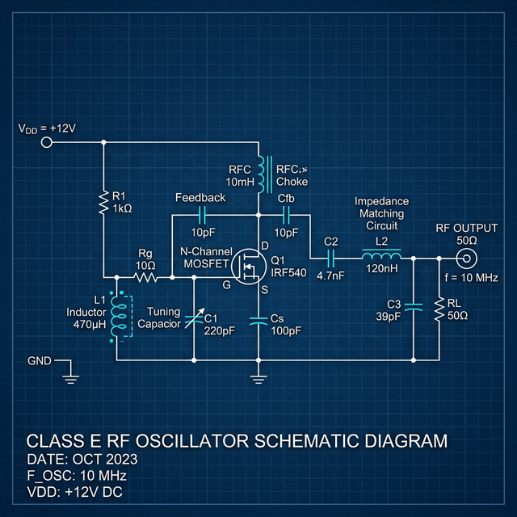

Plasma is part of the circuit
The ring is not passive ornamentation. In the sky-guided reference case it is treated like a conductive loop coupled to the primary field, so visual behavior and circuit loading move together.
sky-guided PCB edition
A resonant xenon toroid board, a 1-liter xenon globe, and a smart base architected for long-run idle stability.
reference brief
The sky-guided project is not a novelty plasma globe with a central electrode. It is an electrode-free toroid system: a high-frequency field excites low-pressure gas until the discharge behaves like a coherent plasma loop in glass.
That distinction changes the build problem. Gas, pressure, geometry, thermal mass, board tuning, and nearby metal all become part of one coupled electromagnetic system rather than a set of decorative choices.
The sky-guided board is a specific resonant xenon-toroid RF platform publicly documented around a 1-liter low-pressure xenon globe at roughly 13 MHz.
RF platform
The public project describes an inductively coupled xenon plasma toroid driven by a Class-E self-oscillating circuit. A roughly 2 µH loop inductor operates near 13 MHz and about 800 V; with a 1 L, ~15 torr xenon globe in the field, the ionized xenon behaves like a conductive secondary winding.
Topology Class-E self-oscillating
Loop inductor ~2 µH
Drive V ~800 V
Frequency ~13 MHz
Target globe 1 L, xenon, ~15 torrThe Hackaday pages point readers toward the current Codeberg repository for canonical design files. Older Hackaday file bundles are useful history, but not the starting point for a serious revision.
Public version-2 notes point toward adjustable current limit, higher-power capability, and cleaner packaging. Current-limit adjustment is also the natural smart-base interface because it lets the supervisor reduce heat without owning the RF timing.
It does not publicly promise 8-hour continuous idle operation, universal globe compatibility, or an official integrated smart controller. The long-run target is therefore a system design problem.
operating regime
The ring is not passive ornamentation. In the sky-guided reference case it is treated like a conductive loop coupled to the primary field, so visual behavior and circuit loading move together.
A continuous conductive collar near the active region can couple, heat, detune, and distort the field. Thermal hardware needs gaps, segmentation, and deliberate routing.
Xenon is the board's public reference gas, not merely a color. It anchors the expected ignition, sustaining behavior, coupling, and thermal assumptions.
Pressure changes breakdown, sustaining current, morphology, and heat. A visually dramatic globe can be less suitable than a calmer globe for long idle operation.
Stable idle toroid and spectacular visual effect are not the same objective.
four-layer filter
The selected path is a 1 L, xenon-dominant, low-pressure globe because it stays closest to the sky-guided reference behavior.
thermal reality
Runtime is limited by board heat, globe heat, gas behavior, enclosure recirculation, cooling geometry, and how much power the toroid needs to stay lit. Any one of those can set the limit.
The practical target is a controlled sequence: strike the toroid, stabilize it, reduce to the lowest acceptable idle power, hold inside a measured thermal envelope, and preserve shutdown authority.
A toroid can still look good while the system is thermally drifting into trouble.
forward build
The safest architecture separates into three modules: the RF module (sky-guided board + globe support + coil region, minimally touched), the smart base module (cold plate, fans, controller, power switching, display, knobs, and safety logic), and a mechanical bridge (revised support print coupling the globe and RF board to the thermal base without placing a conductive loop around the active field). That separation lets you add aggressive thermal management and safety without destabilizing the 13 MHz resonator.
Power first, fans second, shutdown always. Fans manage heat; power limiting prevents heat generation; a hard cutoff catches anything the softer loops fail to contain. Do not PWM the RF supply directly at low frequency from the ESP32 — that will be ugly electrically and mechanically. Instead, control an upstream programmable CC/CV stage feeding the toroid board, letting the smart base adjust available input power smoothly without hacking the RF oscillator core.
A machined 6061 aluminum cold plate sits under the board, aligned to the existing under-board sink region. The sky-guided notes say the board layout was constrained by fitting a heatsink under the board for a 40 mm fan, and the MOSFET thermal area is stitched with many thermal vias. Pull-through airflow draws cool air from the bottom/front through the fin stack, exhausting from rear and upper side vents — never straight up around the globe, because you do not want to bathe the glass in hot exhaust.
Three split aluminum or copper thermal fingers rise from the base outside the coil footprint and touch the lower 8-15 mm of the globe exterior with very soft silicone thermal interface pads. Each finger is narrow, vertically slotted to break eddy-current paths, positioned symmetrically at 120° spacing, and insulated from the others. Three-point contact is easier to align and less likely to stress the glass.
This is the biggest hidden trap. The xenon toroid behaves like a conductive loop analogous to the secondary winding of a transformer. Any closed metal loop placed near the inductor or around the globe can act like a shorted secondary — stealing power, distorting the field, heating itself, and potentially wrecking performance. The heatsink device under the globe must not be a full annular collar, a continuous ring, or a solid conductive cup directly under the inductor footprint. It must be electrically and mechanically isolated segments with clear air gaps between them.
Upper deck holds the RF board and revised support print. Lower deck/plenum contains the cold plate, fans, controller, power electronics, and safety switch. Cold plate is a 6-8 mm aluminum base plate machined flat with threaded holes for support pillars, mounting pattern for fan shroud, and anchor points for the split globe fingers.
Do not fully enclose the globe. The shell should be open above the board and around the globe, closed around the lower plenum, with rear-side exhaust louvers, finger-safe barriers around any live metal, and removable service panels for the controller and fans. PETG/ASA for outer shell, preferably PC/CF or PA-CF for hotter inner structural parts.
The MOSFET thermal tab is on drain, not ground, and the drain thermal area is specially handled in the PCB layout. Any larger metal sink you add must respect that reality. Do not assume the heatsink region is safe to expose or casually ground. If the cold plate touches a thermally conductive board region that is drain-coupled, you need an electrically insulating thermal interface or a fully protected inaccessible sink architecture.
Your goal is achievable only if you accept that the controller must be allowed to reduce toroid power. A still-clearly-formed, stable toroid at the lowest sustainable power, thermally managed and protected, is the right objective.
design limits
These targets are set well below aggressive published numbers because the goal is not "works for a while" — it is "stays sane for 8 hours." Public ALOH material lists operating temperature up to 80°C, and the stock overheat alarm maps to a very hot MOSFET case. Those are not the right numbers for continuous-design targets.
| Zone | Target | Warning | Hard Shutdown |
|---|---|---|---|
| Globe outer surface | 45-50°C | 55°C | 60-65°C |
| Cold plate | 45-55°C | 65-70°C | 80-85°C |
| Enclosure air | < 40°C | — | — |
| Globe power-derate floor | 50°C upward — begins reducing generator power | ||
PT1000 thin-film RTD or small glass-bonded sensor mounted in one of the split thermal fingers. Stable, low-drift readings in the 30-80°C range. The signal path should not depend on globe emissivity like IR sensors do.
10k NTC or second RTD epoxied directly to the cold plate at the MOSFET thermal zone. The v2 board's TMP708-style overheat sensor trip at ~56°C corresponded to ~100°C MOSFET case temperature — your own sink sensor should be much more conservative for long life.
Simple digital ambient sensor mounted away from the coil and direct exhaust stream. Gives a sanity check on whether your enclosure is heat-soaking over time.
Separate from the ESP32: an analog thermostat / comparator chain that kills main input if the sink crosses a hard limit. This must work even if the ESP32 crashes, the display locks up, the fan tach line lies, or the software PID goes unstable.
Slow PI loop (not aggressive full PID). Process variable: outer-glass temperature near the lower globe. Control output: generator power limit / current limit / supply setpoint. Update rate: ~1-2 seconds. Rate-limited setpoint changes only. Why not fast PID? Because the oscillator is self-resonant, high-frequency, and timing-sensitive. Fast low-frequency modulation injected into that system destabilizes it.
This can be a normal fan curve or PI loop. Process variable: heatsink or MOSFET-area temperature. Control output: fan duty. Update rate: ~100-500 ms. Can react faster than the globe loop because fan speed changes do not directly disturb the RF discharge — unlike power-level changes.
interactive PCB
Hover or tap the outlined regions to connect the schematic to the sky-guided operating assumptions.

validation sequence
Instrument: globe contact temp, sink temp, enclosure ambient, supply voltage/current, fan RPM. Run at: strike mode, idle candidate #1, idle candidate #2, and forced-fan full speed. Log 60-120 minutes each. Find: minimum power that sustains the idle toroid, globe temperature rise rate, sink-to-ambient rise, and how much fan speed actually changes globe temperature.
Tune fan loop first, then tune slow power-derating loop, then add trip and retry logic. Do a 4-hour soak first. Then 8-hour only after: no drift, no runaway, no repeated extinguish/restrike behavior, and no enclosure softening. Do not aim for the full 8-hour run immediately — each phase must prove the previous assumptions before extending.
The point is not to guess your way into success. The point is to remove uncertainty in a rational order.
supervisory firmware
The smart base should not be a single PID loop. It is a state machine where each state has its own rules for what power is allowed, what fans do, and what constitutes a reason to advance or retreat.
Nothing active except UI logic. Fans off unless a post-run cooling window is still open.
Verify sensors are valid, fans spin correctly, and no over-temperature condition is already present before allowing the strike attempt.
Time-bounded higher-power ignition window. Exit on confirmed ignition or timeout, then ramp down into the measured idle envelope.
Plasma is lit but still settling. The controller waits for discharge to reach a coherent toroid before enforcing long-run idle conditions.
Maintain acceptable toroid at the lowest sustainable power. Slow outer loop on globe temperature drives current-limit setpoint. Faster inner loop drives fan PWM from sink temperature.
Generator off, fans remain active. Temperatures monitored until the system falls below a defined threshold. Only then does the state advance to OFF.
Generator disabled. Cooling continues if temperatures require it. Fault is latched — user reset required. State and cause displayed clearly. No automatic restart.
The state-machine framing is one of the most valuable outputs of the design session because it converts the vague idea of "PID cooling" into an appliance-like control logic with clear transitions and bounded behavior in each mode.
Input: globe-contact temperature proxy. Output: available current-limit setpoint. Behavior: slow, rate-limited, biased toward stability. Chasing tiny fluctuations aggressively destabilizes the toroid without protecting temperatures.
Input: cold-plate temperature. Output: fan PWM. Can react faster than the globe loop because fan speed changes do not directly disturb the RF discharge — unlike power-level changes.
ESP32-S3, small IPS display, rotary encoder with push, RUN / IDLE / OFF switch, latching emergency stop, buzzer and status LEDs, fan tach inputs, analog or digital interface to the programmable supply/current limit, nonvolatile storage for profiles.
Main knob: target temperature or idle intensity. Toggle: OFF / AUTO / MANUAL. Small button: menu / acknowledge alarm. Display pages cycle through: Globe temp, Sink temp, Ambient, Fan %, Power setpoint, and current state.
This should be a state machine, not a single forever-PID loop. Startup: fans pre-spin, confirm sensors valid, enable input power, apply strike power for bounded interval, detect oscillation, ramp down into idle control. Fault: trip immediately on hard limit, sensor disconnect, or fan stall while hot — then power off generator, keep fans on until cooled, latch fault, require manual reset.
bill of materials
This is the BOM class to start with — not a final parts list, but the categories and quantities that define the system.
From public ALOH material, the most useful things to borrow are product-level principles: compact detached-globe base architecture, explicit overheat protection, single-user control lever / intensity adjustment, and acceptance that the device is a meaningful heat source with a published operating range up to 80°C. Do not claim ALOH proves a specific fan or heatsink layout — that is not publicly documented.
Move away from relying purely on a small USB-C-PD arrangement. The higher-power 5A module plus smart base controller and fan overhead demand a proper stationary supply.
risk register
A good reference preserves its uncertainties, not only its conclusions. These are the unresolved risk factors from the full design session.
Closed conductive loops placed near the active field can couple, heat unexpectedly, and distort toroid formation. All thermal hardware near the globe must be segmented and broken.
The globe can look visually stable while thermally drifting upward. Visual inspection is not a reliable safety indicator. Measured globe-contact temperature is required.
Overly invasive supervisory integration can destabilize the resonant system. Supervision should be upstream and slow, not gate-drive-level and fast.
A poorly seated globe-contact sensor creates false confidence. Sensor mount repeatability is a first-class design concern, not an afterthought.
A well-designed shell can still trap hot air if exhaust paths are inadequate. Recirculation is especially dangerous for long-run thermal targets.
The true long-run thermal envelope on the sky-guided board remains the biggest unresolved application-specific uncertainty. Short successful runs do not prove 8-hour safety.
The sky-guided reference case is ~15 torr xenon. Any deviation affects ignition margin and sustaining behavior.
A badly tuned power-derating loop can collapse the toroid while attempting to protect it. The control objective is the lowest sustainable idle toroid, not maximum brightness or maximum thermal protection.
non-negotiable
Keep the plasma toroid strictly away from anyone with pacemakers, implanted defibrillators, neurostimulators, or other implanted electronic medical devices.
The glass can reach burn temperatures during and after operation. MOSFETs and heatsinks also need active cooling and post-shutdown airflow.
At 10 MHz, skin-effect currents can cause deep RF burns without triggering the normal nervous-system pain response in time. Keep hands clear of energized circuitry.
Use borosilicate glass assumptions only. Do not substitute quartz unless UV containment has been engineered and verified.
Arcs and high electric fields can generate ozone. Operate only with ventilation.
Without the smart base and thermal qualification, treat stock-board operation as short duty: about 1-2 minutes followed by cool-down.
The MOSFET thermal tab is on drain, not ground. Any larger metal heatsink must use an electrically insulating thermal interface or be fully protected/inaccessible. Never casually ground the drain thermal area.
Do not try to control the toroid by hard-chopping its main DC input with a low-frequency PWM. Control an upstream programmable CC/CV stage instead, adjusting available power smoothly and reversibly.
public trail
The canonical design files live in the Codeberg repository linked from the Hackaday project, not in the older Hackaday “Files” archives.